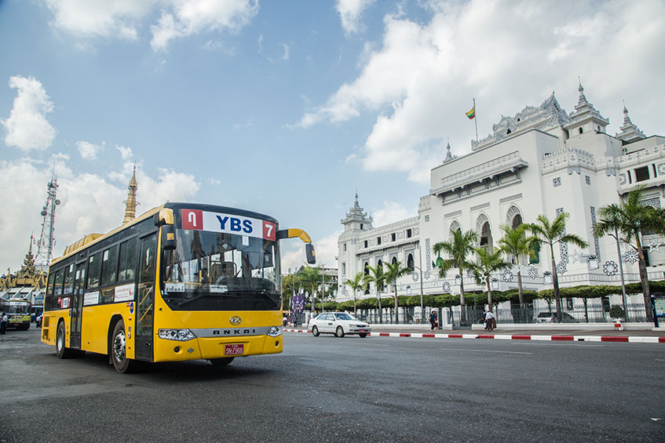
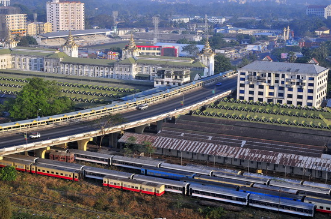
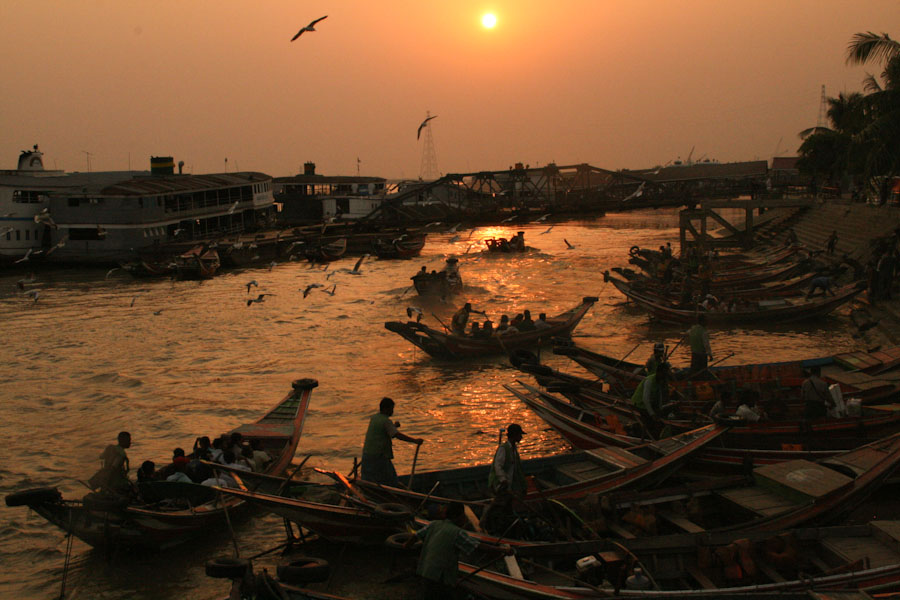

Yangon Transportation
Air
.jpg)
Yangon International Airport, located 12 miles (19 km) from the centre, is the country's main gateway for domestic and international air travel. The airport has three terminals, known as T1, T2 and T3 which is also known as Domestic. It has direct flights to regional cities in Asia, mainly: Doha, Dubai, Dhaka, Kolkata, Hanoi, Ho Chi Minh City, Hong Kong, Tokyo, Beijing, Phnom Penh, Seoul, Guangzhou, Taipei, Bangkok, Kuala Lumpur, Kunming and Singapore. Although domestic airlines offer service to about twenty domestic locations, most flights are to tourist destinations such as Bagan, Mandalay, Hehoand Ngapali, and to the capital Naypyidaw. Mann Yadanarpon Airline, Myanmar National Airline (MNA),Myanmar Airline International (MAI), Air KBZ and FMI Air are the most popular airline in Myanmar.
Bus System

Yangon Bus Service (YBS) is a bus transport network system which started operations on 16 January 2017, serving Myanmar's former capital city of Yangon. It is operated by the Yangon Region Transport Authority (YRTA)
Prior to the implementation of the new bus network, Yangon's bus network was overseen by the Yangon Motor Vehicles Supervisory Committee (colloquially referred to as Ma HtaTha), and served a majority of the city's 2.8 million commuters daily. Private bus companies also ran lines throughout the city at a smaller scale. Of the 7,800 buses registered in Yangon, 4,000 of them plied the streets of Yangon daily, covering over three hundred bus lines.
A main reason for the overhaul of the bus network was the increasing number of complaints against bus operators for compromising passengers' safety in a bid to maximise profits, with bus drivers driving dangerously to pick up more commuters than their competition. The bus conductors (locally known as 'spares') were also heavily criticised for their poor attitude and constant overcharging.
The Chief Minister of Yangon, Phyo Min Theinbrought the issue of public transport reforms into the spotlight.
Railway System

.jpg) Yangon Central Railway Station is the main terminus of Myanmar Railways' 5,403-kilometre (3,357 mi) rail network whose reach covers Upper Myanmar (Naypyidaw, Mandalay, Shwebo), upcountry (Myitkyina), Shan hills (Taunggyi, Lashio) and the Taninthayi coast (Mawlamyine, Dawei).
Yangon Circular Railway operates a 45.9-kilometre (28.5 mi) 39-station commuter rail network that connects Yangon's satellite towns. The system is heavily used by the local populace, selling about 150,000 tickets daily. The popularity of the commuter line has jumped since the government reduced petrol subsidies in August 2007.
Yangon Central Railway Station is the main terminus of Myanmar Railways' 5,403-kilometre (3,357 mi) rail network whose reach covers Upper Myanmar (Naypyidaw, Mandalay, Shwebo), upcountry (Myitkyina), Shan hills (Taunggyi, Lashio) and the Taninthayi coast (Mawlamyine, Dawei).
Yangon Circular Railway operates a 45.9-kilometre (28.5 mi) 39-station commuter rail network that connects Yangon's satellite towns. The system is heavily used by the local populace, selling about 150,000 tickets daily. The popularity of the commuter line has jumped since the government reduced petrol subsidies in August 2007.
River

Yangon's four main passenger jetties, all located on or near downtown waterfront, mainly serve local ferries across the river to Dala and Thanlyin, and regional ferries to the Irrawaddy delta. The 22-mile (35 km) Twante Canal was the quickest route from Yangon to the Irrawaddy delta until the 1990s when roads between Yangon and the Irrawaddy Division became usable year-round. While passenger ferries to the delta are still used, those to Upper Burma via the Irrawaddy river are now limited mostly to tourist river cruises. In 2017 October, a New Yangon Water Bus was launched.
Express Way (Yangon-Mandalay)

The Yangon–Mandalay Expressway
is an expressway in Myanmar (Burma) that connects the country's largest city Yangonand second largest city Mandalay. Opened in December 2010, the 587 km (365 mi) expressway has reduced the travel time between Yangon and Mandalay to 7 hours from 13 hours by train and from 16 hours by the old highway. The highway, which does not meet international design, construction and safety standards has seen a spate of accidents since its opening.
 Facebook:
Facebook:  Email:
Email:  Browser:
Browser:  Phone:
Phone:  Address:
Address: